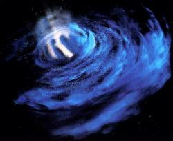

Wormhole |
|
||||||
|  |
Tunnel spaziale che unisce in maniera generalmente incostante nel tempo due
punti differenti dello spazio e, alcune volte, anche del tempo (Eye
of the Needle).
Le prove dell'apparizione e della scomparsa di un wormhole sono verificabili con
opportune misurazioni e tramite il livello dei neutrini presenti si può
risalire all'ultima manifestazione del fenomeno. L'apparizione crea
un'instabilità subspaziale e sarebbe quindi possibile far crescere e
stabilizzare l'instabilità per far riapparire il wormhole nel luogo desiderato:
ciò si ottiene bombardando la zona con particelle di verterone. Però ci sono
vari fattori che possono deviare un wormhole, come un'eruzione solare o uno
spostamento gravimetrico. Un impulso di gravitoni destabilizza il tunnel e può
distaccarlo dal suo asse, rendendolo completamente instabile (False
Profits).
Wormhole Bajoriano
Transito spaziale permanente tra la regione di spazio di Bajor
nei pressi della catena di asteroidi di Denorios e il quadrante Gamma. Nella
religione bajoriana, il wormhole è un
luogo sacro, casa dei Profeti, le
divinità locali.
Wormhole microscopico
Ha un'apertura di appena 30 centimetri. Scoperto nel
2371 da
Harry Kim, per questo motivo
Paris
suggerisce a Janeway di proporre
Harry Kim come nome del tunnel.
Mette in comunicazione il quadrante Delta con il quadrante Alfa,
ma la connessione ha uno sfasamento temporale di circa 20 anni.
Probabilmente si tratta di un wormhole antichissimo in
avanzata fase di collasso.